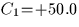
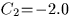
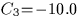
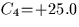
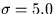

At the heart of many simulation programs is the generation of pseudo-random numbers, evenly distributed in a given range: sla_RANDOM does this. Pseudo-random normal deviates, or ``Gaussian residuals'', are often required to simulate noise and can be generated by means of the function sla_GRESID. Neither routine will pass super-sophisticated statistical tests, but they work adequately for most practical purposes and avoid the need to call non-standard library routines peculiar to one sort of computer.
Applications which perform a least-squares fit using a traditional normal-equations methods can accomplish the required matrix-inversion by calling either sla_SMAT (single precision) or sla_DMAT (double). A generally better way to perform such fits is to use singular value decomposition. SLALIB provides a routine to do the decomposition itself, sla_SVD, and two routines to use the results: sla_SVDSOL generates the solution, and sla_SVDCOV produces the covariance matrix. A simple demonstration of the use of the SLALIB SVD routines is given below. It generates 500 simulated data points and fits them to a model which has 4 unknown coefficients. (The arrays in the example are sized to accept up to 1000 points and 20 unknowns.) The model is:
y = C1 +C2x +C3sinx +C4cosx
The test values for the four coefficients are ,, and .Gaussian noise, , is added to each ``observation''.
IMPLICIT NONE
* Sizes of arrays, physical and logical
INTEGER MP,NP,NC,M,N
PARAMETER (MP=1000,NP=10,NC=20,M=500,N=4)
* The unknowns we are going to solve for
DOUBLE PRECISION C1,C2,C3,C4
PARAMETER (C1=50D0,C2=-2D0,C3=-10D0,C4=25D0)
* Arrays
DOUBLE PRECISION A(MP,NP),W(NP),V(NP,NP),
: WORK(NP),B(MP),X(NP),CVM(NC,NC)
DOUBLE PRECISION VAL,BF1,BF2,BF3,BF4,SD2,D,VAR
REAL sla_GRESID
INTEGER I,J
* Fill the design matrix
DO I=1,M
* Dummy independent variable
VAL=DBLE(I)/10D0
* The basis functions
BF1=1D0
BF2=VAL
BF3=SIN(VAL)
BF4=COS(VAL)
* The observed value, including deliberate Gaussian noise
B(I)=C1*BF1+C2*BF2+C3*BF3+C4*BF4+DBLE(sla_GRESID(5.0))
* Fill one row of the design matrix
A(I,1)=BF1
A(I,2)=BF2
A(I,3)=BF3
A(I,4)=BF4
END DO
* Factorize the design matrix, solve and generate covariance matrix
CALL sla_SVD(M,N,MP,NP,A,W,V,WORK,J)
CALL sla_SVDSOL(M,N,MP,NP,B,A,W,V,WORK,X)
CALL sla_SVDCOV(N,NP,NC,W,V,WORK,CVM)
* Compute the variance
SD2=0D0
DO I=1,M
VAL=DBLE(I)/10D0
BF1=1D0
BF2=VAL
BF3=SIN(VAL)
BF4=COS(VAL)
D=B(I)-(X(1)*BF1+X(2)*BF2+X(3)*BF3+X(4)*BF4)
SD2=SD2+D*D
END DO
VAR=SD2/DBLE(M)
* Report the RMS and the solution
WRITE (*,'(1X,''RMS ='',F5.2/)') SQRT(VAR)
DO I=1,N
WRITE (*,'(1X,''C'',I1,'' ='',F7.3,'' +/-'',F6.3)')
: I,X(I),SQRT(VAR*CVM(I,I))
END DO
END
The program produces the following output:
RMS = 4.88
C1 = 50.192 +/- 0.439
C2 = -2.002 +/- 0.015
C3 = -9.771 +/- 0.310
C4 = 25.275 +/- 0.310
In this above example, essentially
identical results would be obtained if the more
commonplace normal-equations method had been used, and the large
 array would have been avoided. However, the SVD method
comes into its own when the opportunity is taken to edit the W-matrix
(the so-called ``singular values'') in order to control
possible ill-conditioning. The procedure involves replacing with
zeroes any W-elements smaller than a nominated value, for example
0.001 times the largest W-element. Small W-elements indicate
ill-conditioning, which in the case of the normal-equations
method would produce spurious large coefficient values and
possible arithmetic overflows. Using SVD, the effect on the solution
of setting suspiciously small W-elements to zero is to restrain
the offending coefficients from moving very far. The
fact that action was taken can be reported to show the program user that
something is amiss. Furthermore, if element W(J) was set to zero,
the row numbers of the two biggest elements in the Jth column of the
V-matrix identify the pair of solution coefficients that are
dependent.
array would have been avoided. However, the SVD method
comes into its own when the opportunity is taken to edit the W-matrix
(the so-called ``singular values'') in order to control
possible ill-conditioning. The procedure involves replacing with
zeroes any W-elements smaller than a nominated value, for example
0.001 times the largest W-element. Small W-elements indicate
ill-conditioning, which in the case of the normal-equations
method would produce spurious large coefficient values and
possible arithmetic overflows. Using SVD, the effect on the solution
of setting suspiciously small W-elements to zero is to restrain
the offending coefficients from moving very far. The
fact that action was taken can be reported to show the program user that
something is amiss. Furthermore, if element W(J) was set to zero,
the row numbers of the two biggest elements in the Jth column of the
V-matrix identify the pair of solution coefficients that are
dependent.
A more detailed description of SVD and its use in least-squares problems would be out of place here, and the reader is urged to refer to the relevant sections of the book Numerical Recipes (Press et al., Cambridge University Press, 1987).
The routines sla_COMBN and sla_PERMUT are useful for problems which involve combinations (different subsets) and permutations (different orders). Both return the next in a sequence of results, cycling through all the possible results as the routine is called repeatedly.
SLALIB --- Positional Astronomy Library